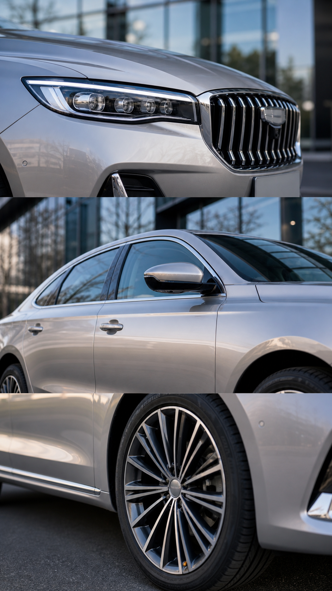
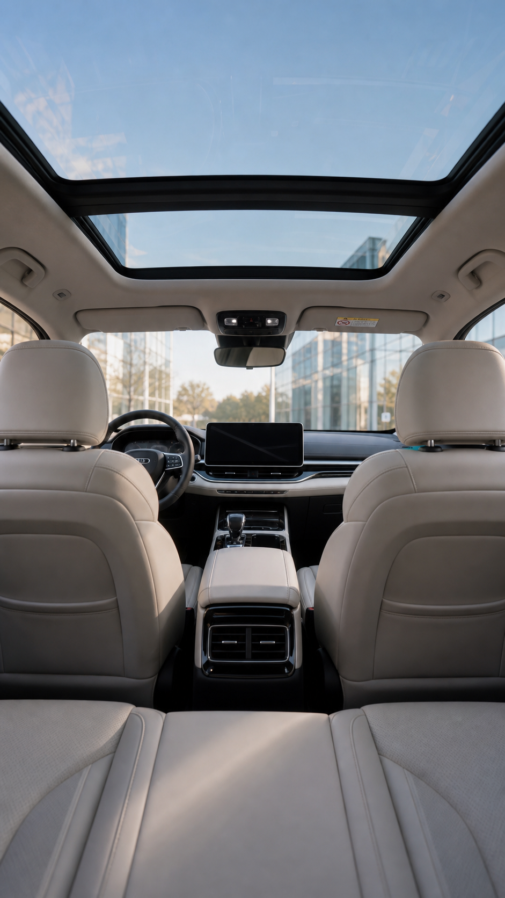

优先查看：自动粗剪预览
已在视频生成前暂停。当前交付为脚本、分镜、字幕、即梦任务表与复跑命令；充值后再生成真正视频。
状态摘要
Truestop_before_video
Falsehas_preview_video
9storyboard_frame_count
4subtitle_segment_count
0video_clip_count
9jimeng_task_count
逐镜头分镜图


参考风格变体视频
根据你给的 5月28日、5月29日 两种参考语法生成。
步骤图 / 流程图
项目简报
- 完成
00_项目简报.md - 完成
00_流程清单.md - 完成
00A_全流程步骤展示.md - 完成
00B_ViMax式制片调度.md - 完成
01_信息流投放策略.md
创意与镜头骨架
- 完成
02_创意方向_3选1.md - 完成
03_3秒钩子库.md - 完成
docs/镜头表与单元切分.md - 完成
docs/站位图.md - 完成
docs/关键帧Prompt_逐张拆分版.md - 完成
docs/Seedance_Prompt_逐单元.md
脚本
- 完成
04_60秒主广告脚本.md - 完成
05_30秒剪辑版脚本.md - 完成
06_15秒剪辑版脚本.md - 完成
07_口播与字幕文案.md - 完成
07A_完整执行脚本.md
镜头与拍摄
- 完成
08_镜头表与拍摄脚本.md - 完成
09_正反打镜头设计.md - 完成
10_拍摄执行清单.md
视觉设定
- 完成
11_人物设定.md - 完成
12_场景设定.md - 完成
13_道具服化与品牌露出.md - 完成
14_分镜图Prompt.md - 完成
15_正反打图片Prompt.md - 完成
16_25宫格视觉板Prompt.md
资产索引与一致性
- 完成
asset_index/asset_manifest.json - 完成
asset_index/reference_selection.md - 完成
asset_index/consistency_checklist.md - 完成
asset_index/frame_qc.md
即梦视频任务准备
- 完成
17_即梦视频生成Prompt.md - 完成
18_即梦批量生成任务表.csv - 完成
videos/manifest.json - 完成
videos/manifest.md - 完成
videos/dreamina_commands.sh - 完成
videos/retry_and_fallback_plan.md - 完成
24_视频生成暂停与复跑说明.md
剪辑与字幕
- 完成
19_剪映剪辑方案.md - 完成
20_剪映时间线.csv - 完成
21_封面标题与投流文案.md
投流交付
- 完成
22_投流素材变体方案.md - 完成
23_交付检查清单.md - 完成
99_执行状态.md
完整执行脚本节选
# 07A_完整执行脚本 ## A 版：真人产品讲解型 参考：`5月28日.mp4` 0-5s 画面：女性主持人站在车旁，半身正面，车头或侧面在身后。 口播：又要颜值，又要家用，这台车可以看看。 字幕：又要颜值，又要家用？ 5-10s 画面：外观细节快切，前脸、车灯、侧身、轮毂。 口播：外观看起来舒展，日常开也不显普通。 字幕：外观舒展，日常有质感。 10-18s 画面：内饰与中控，手划过屏幕，座椅与扶手箱。 口播：坐进车里，空间、座椅、屏幕和储物，才是每天都用得到的地方。 字幕：空间、座椅、智能座舱。 18-25s 画面：后排和后备箱，家庭出行物品。 口播：如果你是家用，后排和装载空间一定要亲自看看。 字幕：家用要看真实空间。 25-32s 画面：主持人回到镜头。 口播：买车别只听别人说，最好到店试驾一圈。 字幕：到店试驾，感受最直接。 32-45s 画面：门店接待、试驾车出发、城市道路。 口播：附近门店可以预约试驾，车型和活动以门店实时信息为准。 字幕：附近门店可预约试驾。 45-60s 画面：主持人站在车旁轻 CTA。 口播：最近在看车的话，点进门店页，先问问实时车型和试驾安排。 字幕：点进门店页，咨询实时信息。 ## B 版：短剧转化型 参考：`5月29日.mp4` 0-5s：女主下班后挤地铁，神情疲惫。字幕：每天通勤，都像被掏空。 5-10s：朋友发消息：周末去看车？字幕：她突然想换一种生活。 10-18s：女主走进吉利门店，看到车辆。字幕：不是冲动，是认真考虑。 18-28s：试坐、看后排、看后备箱。字幕：空间够不够，家人最知道。 28-40s：试驾上路，状态变轻松。字幕：开起来那一刻，答案更清楚。 40-52s：女主自信走出门店。字幕：生活不用一步到位，但可以先试一圈。 52-60s：CTA 转化卡。字幕：附近门店可预约试驾，活动以实时信息为准。
字幕节选
1 00:00:00,000 --> 00:00:05,000 又要颜值，又要家用？ 2 00:00:05,000 --> 00:00:10,000 外观舒展，日常有质感 3 00:00:10,000 --> 00:00:18,000 空间、座椅、智能座舱 4 00:00:18,000 --> 00:00:23,000 到店试驾，感受最直接
执行状态节选
# 99_执行状态 执行日期：2026-06-10 当前状态：已完整跑完视频生成前流程，已暂停在即梦前。 已完成： - 项目简报、投放策略、创意方向、钩子库。 - 60 秒主脚本与完整执行脚本。 - ViMax 式制片调度：`00B_ViMax式制片调度.md`。 - 四件 docs： - `docs/镜头表与单元切分.md` - `docs/站位图.md` - `docs/关键帧Prompt_逐张拆分版.md` - `docs/Seedance_Prompt_逐单元.md` - A 线真人产品讲解关键帧 4 张。 - B 线短剧转化关键帧 5 张。 - B 线 S01 已按反馈重做：从过度情绪化人物卡片，改为雨天通勤痛点 + 手机导航 + 城市道路车辆的吉利汽车短剧开场。 - 字幕包：`subtitles/`。 - 即梦任务表：`18_即梦批量生成任务表.csv`。 - 视频 manifest 与复跑命令：`videos/manifest.md`、`videos/manifest.json`、`videos/dreamina_commands.sh`。 - 资产索引与一致性检查：`asset_index/`。 - 成果看板：`RESULTS.html`。 未执行： - 未跑即梦视频生成。 - 未生成自动粗剪视频。 - 未创建剪映成片草稿。 原因： - 按当前规则，流程停在视频生成前，等待用户确认或即梦充值后再继续。 下一步： 1. 打开 `RESULTS.html` 检查前置包。 2. 充值/确认后运行 `videos/dreamina_commands.sh`，先跑 A1 smoke test。 3. A1 成功后再逐步取消脚本注释，全量跑 A/B 单元。